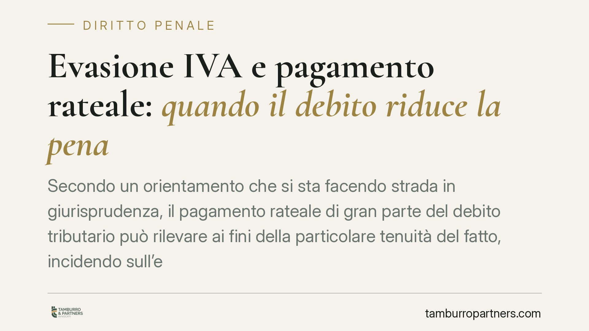

Evasione IVA e pagamento rateale: quando il debito riduce la pena
Secondo un orientamento che si sta facendo strada in giurisprudenza, il pagamento rateale di gran parte del debito tributario può rilevare ai fini della particolare tenuità del fatto, incidendo sull'esito del processo per evasione IVA. Si tratta però di una valutazione caso per caso, non di un principio automatico: capire quando questa strada è praticabile richiede un'analisi puntuale della singola posizione.

Il contesto
Il tema è noto a chi affronta un procedimento per reati tributari: il superamento delle soglie di punibilità previste dal D.Lgs. 74/2000 fa scattare la rilevanza penale dell'omesso o infedele versamento. Da qui la domanda ricorrente: cosa accade se il contribuente, dopo la contestazione, inizia a restituire quanto dovuto, magari con un piano di rateizzazione ancora in corso?
La risposta non è univoca e dipende da due istituti diversi, che è bene non confondere.
Inquadramento normativo
Il primo istituto è la causa di non punibilità per integrale pagamento del debito, disciplinata dall'art. 13 del D.Lgs. 74/2000. La norma, nella sua logica di fondo, premia chi estingue il debito tributario (comprensivo di sanzioni amministrative e interessi) entro i termini di legge, escludendo in alcuni casi la punibilità. Il testo è stato ridisegnato dal D.Lgs. 87/2024, che ha riformato il sistema sanzionatorio tributario e ha dedicato attenzione anche all'ipotesi del pagamento rateale ancora in corso al momento del giudizio. Sul punto, trattandosi di disposizioni la cui struttura è stata modificata di recente, consigliamo di verificare il testo vigente e la collocazione esatta dei commi prima di impostare qualsiasi strategia difensiva.
Il secondo istituto è la particolare tenuità del fatto, prevista dall'art. 131-bis del codice penale. Qui non si parla di non punibilità per pagamento, ma di proscioglimento perché l'offesa, in concreto, è di scarsa consistenza. La differenza è sostanziale: l'art. 13 guarda al comportamento riparatorio; l'art. 131-bis guarda alla gravità complessiva del fatto.
Il nodo delle soglie
Qui emerge la questione più delicata. Secondo un orientamento consolidato, il superamento delle soglie di punibilità rende normalmente arduo applicare l'art. 131-bis ai reati tributari: se la soglia serve proprio a selezionare i fatti penalmente rilevanti, superarla depone contro la tenuità.
Un orientamento più recente e non ancora consolidato valorizza invece la condotta successiva del contribuente. In questa lettura, il pagamento rateale di gran parte del debito potrebbe concorrere a ridimensionare il disvalore del fatto, aprendo – in casi circoscritti – all'applicazione della tenuità anche dove la soglia era stata inizialmente superata. Va detto con chiarezza: si tratta di una direzione interpretativa minoritaria, da verificare pronuncia per pronuncia, non di una regola generale.
Implicazioni pratiche
Per l'imprenditore o il professionista destinatario di una contestazione, il messaggio operativo è duplice.
Da un lato, il comportamento riparatorio conserva un peso concreto nel processo: restituire il dovuto non è mai neutro. Dall'altro, non esiste alcun automatismo. La valutazione resta complessiva e considera, tra l'altro: l'ammontare dell'imposta ancora residua, la percentuale di debito effettivamente estinta, la tempestività del versamento e l'eventuale abitualità della condotta.
Un piano di rientro appena avviato, su una frazione minima del dovuto, difficilmente avrà lo stesso rilievo di un pagamento che copre la quasi totalità del debito. La misura e la serietà dello sforzo riparatorio contano.
Cosa fare in concreto
- Ricostruisci con precisione la posizione debitoria: imposta, sanzioni e interessi, distinguendo quanto già versato da quanto residuo.
- Attiva o formalizza un piano di rateizzazione con l'Agenzia delle Entrate il prima possibile e conserva ogni prova dei versamenti eseguiti.
- Verifica il testo vigente dell'art. 13 D.Lgs. 74/2000 dopo la riforma del 2024, perché termini ed effetti del pagamento rateale incidono direttamente sulla difesa.
- Documenta la serietà dello sforzo riparatorio: percentuale estinta, continuità dei pagamenti, assenza di condotte analoghe pregresse.
- Fatti assistere prima delle scadenze processuali: la tempistica tra pagamento, rate e fasi del giudizio è decisiva e non recuperabile a posteriori.
Una precisazione doverosa
Gli orientamenti favorevoli all'applicazione della tenuità in materia tributaria vanno maneggiati con cautela: costruire una difesa su un indirizzo non ancora stabilizzato espone a esiti incerti. Nessuna soluzione garantisce il proscioglimento. L'analisi va calibrata sul singolo caso, confrontando la posizione concreta con lo stato effettivo della giurisprudenza al momento del giudizio.
---
Contributo informativo a cura di Tamburro & Partners – Avv. Giuseppe Tamburro. Non costituisce parere legale.
Ogni condominio ha una storia a sé.
Se gestisci un'amministrazione e vuoi un confronto su una specifica questione condominiale, scrivi allo studio. Ti rispondiamo entro un giorno lavorativo.